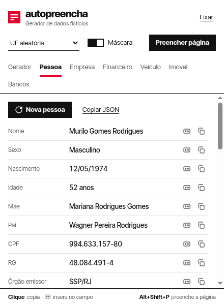
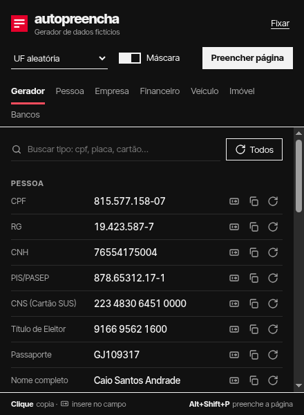
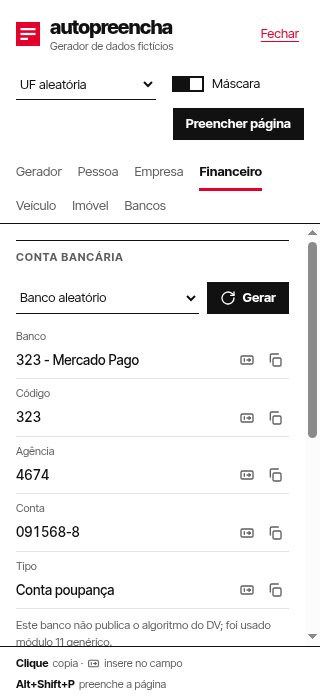

O Autopreencha é uma ferramenta de trabalho: quem usa quer o dado certo, rápido. A identidade segue o estilo tipográfico internacional suíço — grade rigorosa, tipografia como protagonista e uma única cor de ação.
Todo espaçamento é múltiplo de 8 (4 em ajustes finos). Nada é posicionado “no olho”.
O vermelho marca só o que é ativo ou acabou de acontecer. O resto é preto, cinza e branco.
Separação por filetes de 1 px e espaço em branco. Sem sombras, gradientes ou cantos arredondados.
O símbolo é uma ficha cadastral reduzida ao essencial: dois campos completos e um sendo preenchido. O logotipo é a palavra em caixa baixa, Inter Tight 800, com espaçamento −4%.
Acima de 32 px usa-se o desenho padrão (icons/icon.svg). Em 16 px, uma versão própria alinhada à grade de pixels (icons/icon-16.svg), com barras de 2 px.
O vermelho tem um único papel: indicar o que está ativo ou acabou de acontecer (aba atual, valor copiado, foco, hover do botão principal). Nunca para decorar.
| Token | Claro | Escuro | Uso |
|---|---|---|---|
| --bg | #FFFFFF | #111111 | Fundo |
| --text | #111111 | #F2F2F2 | Texto e valores |
| --muted | #5F5F5F | #A3A3A3 | Rótulos, descritores |
| --accent | #E4002B | #FF4D5E | Ativo, copiado, foco |
| --rule | #111111 | #F2F2F2 | Filete estrutural |
| --hairline | #E3E3E3 | #2C2C2C | Separador de linhas |
| --surface | #F4F4F4 | #1C1C1C | Hover |
| Combinação | Claro | Escuro | Nível |
|---|---|---|---|
| Texto sobre fundo | 18,9:1 | 16,9:1 | AAA |
| Rótulo (muted) sobre fundo | 6,4:1 | 7,5:1 | AA |
| Vermelho sobre fundo | 4,8:1 | 5,8:1 | AA |
| Branco sobre vermelho (hover) | 4,8:1 | — | AA |
Inter Tight (SIL Open Font License), empacotada na extensão em src/fonts/ — nenhuma requisição externa. Texto sempre alinhado à esquerda; valores com algarismos tabulares, para alinhar em coluna.
| Estilo | Amostra | Especificação |
|---|---|---|
| Logotipo | autopreencha | 800 · 20 px · −4% |
| Título de seção | Pessoa | 700 · 11 px · caixa alta · +8% |
| Dado gerado | 937.252.723-87 | 500 · 13,5 px · tabular |
| Interface | Preencher página | 400–700 · 13 px · 150% |
| Rótulo | Título de eleitor | 400 · 12 px · muted |
| Nota | DV calculado pelo algoritmo oficial. | 400 · 11 px · muted |
| Elemento | Medida |
|---|---|
| Popup | 440 × 600 px; margem lateral 16 |
| Barra lateral | Largura livre; abaixo de 340 px o rótulo sobe para cima do valor |
| Cabeçalho | Símbolo 24 px · respiro 16/8 · filete preto de 1 px |
| Linha de dado | Rótulo 112 px · valor flexível · ações 28 px · filete 1 px |
| Aba ativa | Sublinhado vermelho de 3 px; intervalo entre abas 16 |
| Raio | 0 em todos os elementos |
Grade de 24 px, traço de 1,5–2 px, cor herdada do texto. Ícones acompanham o texto ou têm aria-label; nunca são o único indício de uma ação nova.
Uma frase, sem exclamação. A graça está no que não se diz: o produto lembra, com cara séria, que nada daquilo existe. O humor aparece só nos momentos de sucesso ou de vazio — nunca em erros de permissão ou de página.
| Situação | Texto |
|---|---|
| Formulário preenchido | 14 campos preenchidos. Nenhuma pessoa real foi incomodada. |
| Nenhum campo reconhecido | Nenhum campo encontrado. Talvez seja só texto. |
| Valor copiado | CPF copiado. |
| Valor inserido | CPF inserido no campo. |
| Inserir sem campo selecionado | Clique antes em um campo da página |
| Página bloqueada (about:, loja) | Esta página não permite preenchimento |
| Permissão negada | Permissão negada para acessar a página |
| Busca sem resultado | Nenhum tipo encontrado. |
| Rodapé | Clique copia · insere no campo · Alt+Shift+P preenche a página |
Em negrito, as frases com humor. As demais são deliberadamente neutras.
Autopreencha na loja e em frases; autopreencha (caixa baixa) apenas no logotipo. Nome completo na loja: “Autopreencha – Gerador de dados fictícios”.
Popup nos temas claro e escuro (seguem o sistema) e barra lateral estreita. Capturas da versão 1.3.


